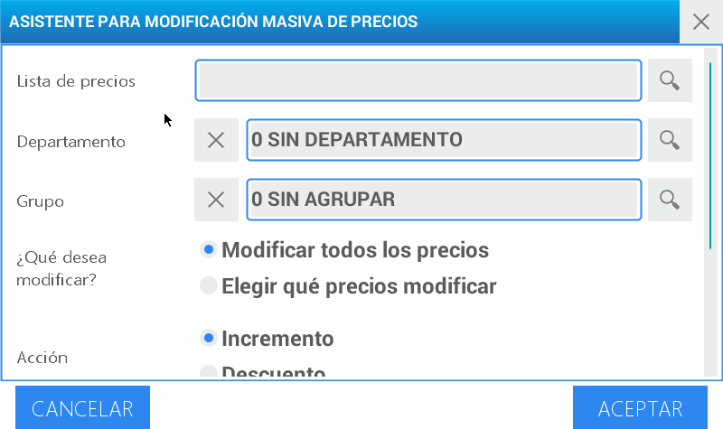
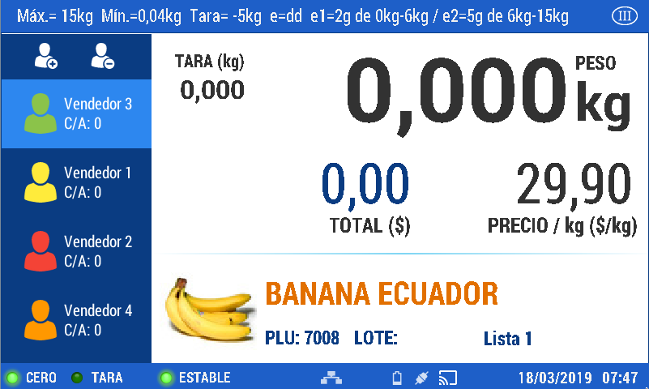
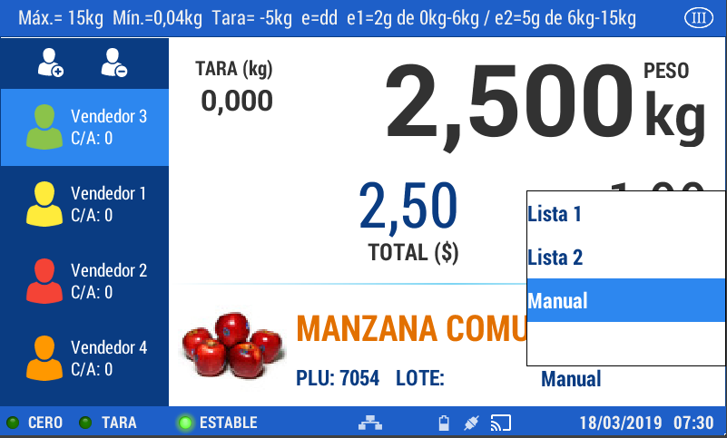

Precios
Para realizar una venta, es necesario fijar un precio. El equipo dispone de una gran variedad de modos en los que se puede realizar esta operación.
El precio se puede fijar de manera manual.
Este procedimiento se utiliza generalmente cuando el producto no se encuentra cargado en la balanza o cuando es necesario cambiar el valor por una situación puntual.
Escriba por teclado numérico el precio del artículo a vender (con la coma): Ejemplo 12,50

Presione la tecla .
Luego presione . Como el precio se fijó de manera manual y el equipo no sabe a qué artículo pertenece, el mismo se identificará como UNIDAD.
El precio se puede fijar al generar un PLU
Al momento de crear un PLU, dentro de las acciones de configuración encontrará la asignación del valor del producto. Los pasos necesarios para llevar adelante esta operación los encontrará en: Menú - ABM’s - PLU
El precio se puede modificar desde la lista de precios
Presione la tecla menú , seleccione un usuario e ingrese la contraseña, y luego la opción Asistente Precios

Desde este punto es posible modificar los valores de una lista de precios ya existente.
Seleccione Modificación masiva de Precios

Seleccione la lista de precios a modificar presionando la opción de búsqueda
Seleccione el departamento presionando la opción de búsqueda.
Seleccione el grupo presionando la opción de búsqueda.
Elija lo que desea rectificar: el valor de algunos artículos o el costo de todos los productos que contiene la lista de precios escogida
Seleccione la acción: incremento o descuento
Seleccione si es Monto fijo o Porcentaje.
Coloque el monto o porcentaje
Presione aceptar
Si escoge “Elegir que precios modificar” deberá seleccionar los productos sobre los cuales se aplicará la acción definida. Luego presione aceptar.

Si opta por “Modificar todos los precios” sólo visualizará en la pantalla el mensaje de confirmación de la operación realizada.
Utilización de diferentes precios en un mismo artículo
Cuando se convoca a un PLU por medio de cualquiera de las opciones detalladas con anterioridad, la balanza siempre mostrará el PRECIO LISTA 1.

Si desea utilizar el PRECIO LISTA 2, simplemente presione en la pantalla el campo de lista de precios, luego de haber convocado al artículo.

Asignación de precio eventual para un PLU de forma manual
Si por algún motivo necesitara realizar un cambio de precio del producto de forma inmediata, de manera de asignarle un nuevo valor al momento de la venta, simplemente convoque al artículo y presione la tecla

Luego digite en el teclado numérico el valor del producto
Presione
Se corregirá el campo de precio y el que corresponde a total.
En el campo definido para seleccionar la lista de precios se visualizará la palabra “Manual”

Presione nuevamente para cambiar la venta.
Producto con precio abierto
Recuerde que si alguno de los precios de lista se deja abierto (Precio = 0), la balanza solicitará que se introduzca de manera manual al momento de la venta. Ejemplo: Si un producto tuviera PRECIO LISTA 2= $ 0.00, al momento de convocar al PLU se mostraría el precio de LISTA 1, y presionando PRECIO, permitiría la asignación manual de un precio momentáneo por no encontrar cargado el precio de LISTA 2.
Porcentaje de descuento
La aplicación de un descuento sobre un producto, puede realizarse de diversas maneras. Una de ellas es utilizando el Asistente de Precios. Desde esta opción podrá establecer descuentos de manera general o particular y elegir la reducción del costo de un producto por porcentaje o valor.
Aplicar descuento de forma inmediata:
Convoque al artículo y presione la tecla
En esta opción puede asignar una rebaja del costo del producto sólo por porcentaje.

Ingrese en el teclado numérico el descuento a asignar y presione Aceptar

Se corregirá el campo de precio con la deducción aplicada.
En el campo definido para seleccionar la lista de precios se visualizará la palabra “Manual”.
Presione nuevamente para realizar la venta.